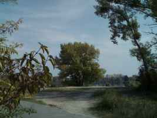
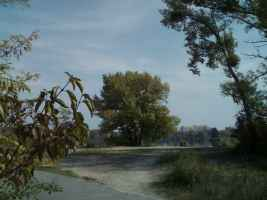

Chránené vtáčie územie (CHVÚ) Dunajské luhy - NATURA2000
Chránenej krajinnej oblasti (CHKO) Dunajské Luhy
Chránený areál (CHA) SKUEV0269 Ostrovné Lúčky zóna B - 4. stupeň ochrany - Veľké Jazero
a
Chránený areál (CHA) SKUEV0269 Ostrovné Lúčky zóna D - 2. stupeň ochrany - Malé jazero
V súčasnosti (rok 2022) je kúpanie povolené len na malom jazere. Na veľkom jazere platí zákaz pohybu mimo turistických chodníkov a tie k jazeru nevedú!
V minulosti to však bolo trošku komplikovanejšie, pretože tu platili 2 druhy ochrany:
OCHRANA PRÍRODY a OCHRANA VODNÝCH ZDROJOV
A tu sú niektoré dôležité udalostí na jazerách:
od 1960 - začiatok ťažby štrku na miestach s najsilnejšími vrstvami naplavených štrkopieskov, bágrovanie jám.
od 1970 - vznik jazier alebo postupné zaplavenie dvoch bágrovísk. Vzniká Veľké Čunovské a Malé Čunovské jazero.
70te a 80te roky sú spojené aj so začiatkami nudizmu a kúpania sa na jazerách aj napriek zákazu.
rok 1981 - uvedený do prevádzky podzemný zdroj pitnej vody Rusovce - Ostrovné lúčky - Mokraď bol vybudovaný postupne v priebehu rokov 1976 – 1990 . Názov dostal VZ ROL alebo VZ ROL-M. Čunovské jazerá boli súčasťou ochráného pásma vodného zdroja tzv. pásme hygienickej ochrany (PHO) tohoto vodného zdroja.
01.09.1988 - vyhlásená prírodná rezervácia Ostrovné lúčky so 4. stupňa ochrany - Veľké čunovské jazero bolo jej súčasťou. Výmera 54,93 ha. Vvyhlásená výnosom Ministerstva kultúry Slovenskej socialistickej republiky č. 1160/1988-32 zo 30.6.1988, s účinnosťou od 1.9.1988
25.02.1988 - Čunovské jazerá sú začlenené do ochranného pásma hygienickej ochrany PHO II. stupňa. Rozhodnutím odboru poľnohospodárstva, lesného a vodného hospodárstva Národného výboru hlavného mesta SR Bratislavy č. vod. 489/405-1988, určenie PHO I . a PHO II. stupňa pre vodný zdroj Rusovce-Ostrovné lúčky-Mokraď (VZ ROL-M). PHO I. bolo určené pre studňový rad a PHO II pre okolie ktoré vtedy zahŕňalo okrem Čunovských jazier aj Rusovské jazero a Veľký zemník.
24.10.1992 - prehradenie starého koryta Dunaja- vodné dielo Gabčíkovo/zdrž Hrušov - zmena prúdenia podzemných vôd v oblasti Čunovských jazier. Voda v jazerách postupne prestala ovplyvňovať kvalitu podzemnej vody.
21.05.1998 - obe jazerá sa stávajú súčasťou Chránenej krajinnej oblasti (CHKO) Dunajské luhy. Bola vyhlásená vyhláškou MzP SR č. 81/1998 Z. z. o Chránenej krajinnej oblasti Dunajské luhy z 3. marca 1998
30.08.1999 - zmena hraníc ochranného pásma vodárenského zdroja Rusovce - Ostrovné lúčky - Mokraď - VZ ROL-M. Hranica vodárenského zdroja PHO II sa posunula bližšie k Čunovským jazerám, ale jazero bolo stále jeho súčasťou so zákazom kúpania. V zmysle vodoprávneho rozhodnutia Krajského úradu životného prostedia (KÚŽP) v Bratislave č. W/99/649/1999-GGL bol VZ zabezpečený pásmami hygienickej ochrany PHO 1. stupňa, PHO 2. stupňa – vnútorná časť, PHO 2. stupňa – vonkajšia časť . Dôvod: zmena prúdenia podzemných vôd v oblasti (VD Gabčíkovo) a voda v jazere už neovplyvňuje podzemnú vodu. Rusovské jazero a ďalšie územie bolo úplne vyňaté z ochranného pásma vodárenského zdroja.
01.08.2004 - výnosom Ministerstva životného prostredia Slovenskej republiky č. 3/2004-5.1 zo 14. júla 2004,sa ustanovujú Ostrovné lúčky ako územie európskeho významu NATURA 2000 - kód SKUEV0269. Rozloha 613,56 ha (v roku 2011 aktualizovaná na 627,58 ha). .
24.07.2007 - Krajský úrad životného prostredia v Bratislave rozhodol o vyňatí Čunovských jazier z ochranného pásma II. stupňa vodného zdroja. Rozhodnutie nadobudlo právoplatnosť koncom júla alebo začiatkom augusta 2007. Na veľkom jazere ale stále platil 4. stupeň ochrany pretože bolo súčasťou PR Ostrovné lúčky a zákaz pohybu mimo vyhradeného územia - zákaz kúpania sa. Na malom jazere platil 2. stupeň ochrany prírody a bolo povolené kúpanie sa.
12.11.2008 - Vyhláškou Ministerstva životného prostredia Slovenskej republiky - Vyhláška č. 440/2008 Z. z, sa vyhlasuje Chránené vtáčie územie Dunajské luhy, ako chráneného územia členskej krajiny Európskej únie s názvom NATURA 2000. Čunovské jazerá sú súčasťou tohoto územia.
rok 2009 - Krajský úrad životného prostredia v Bratislave povolil vyhradenú časť veľkého Čunovského jazera pre návštevníkov za účelom rekreácie a športu.
rok 2010 - Krajský úrad životného prostredia v Bratislave zrušil vyhradené miesto pre verejnosť za účelom rekreácie a športu na veľkom Čunovskom jazere. Na konci sezóny 2010 bola za prítomnosti príslušných orgánov vykonaná revízia a skonštatovala, že územie je návštevníkmi degradované. Na veľkom jazere sa tak dalo plávať iba v roku 2009 a 2010. V tomto období mal na jazerách dokonca prevádzku aj bufet s názvom BUFET NA LÚČKACH.
01.03.2021 - nariadením vlády SR sa vyhlasuje chránený areál (CHA) SKUEV0269 Ostrovné lúčky a zaniká prírodná rezervácia (PR)Ostrovné lúčky. Veľké Čunovské jazero patrí do Zóny B stále so 4. stupňom ochrany a Malé Čunovské jazero patrí do Zóny D a má 2. stupeň ochrany podľa § 15 zákona o ochrane prírody a krajiny. Iba na malom jazere je povolené kúpať sa. Toto nariadenie vlády 34/2021 Z.z. zo dňa 27. januára 2021 nadobúda účinnosť 1. marca 2021.
Medzi Rusovcami a Čunovom vedie cesta 1. triedy s názvom Balkánska. Na túto cestu sa tesne za zastavnou časťou Rusoviec napája bezmenná vedľajšia asfaltová cesta, ktorá ide cez Čunovské jazerá a končí až pri bráne BVS. Na začiatku tejto cesty bola kedysi dávno vodárenskou spoločnosťou osadená ochranná brána, ktorá zabraňovala vstupu do vodárenského pásma. Táto brána bola neskôr presunutá, ale jej pozostatky sa tam dajú pozorovať ešte aj dnes.


Na tejto vedľajšej ceste zaparkujete iba s povoleniami od MiÚ Rusovce a Rybárskeho zväzu.
Ak po tejto ceste pokračujete ďalej, dostanete sa až k rampe/závore(osadenej v roku 2008).
Tu väčšinou parkujú autá s povolením.


Kúsok za touto rampou ešte pred rokom 1999 viedla hranica pásma hygienickej ochrany II. stupňa (PHO II).
Pásmo tadiaľto už nevedie, ale ostala tu ešte spomienka v podobe starej tabule so zničeným ťažko čitateľným nápisom:
"VODNÝ ZDROJ PHO II. STUPŇA - VNÚTORNÁ ČASŤ NEPOVOLANÝM VSTUP ZAKÁZANÝ"


Hranica pásma bola v roku 1999 posunutá vyššie takmer až k Čunovským jazerám.
Kúsok naľavo od prvej rampy je potom osadená ešte jedna. Tá zabraňuje príjazdu áut lesnou cestou.

Od rampy pokračuje asfaltka ďalej cez Rusovský kanál k jazerám, už obklopená lesom.
Nová osadená tabuľka nám dáva na známosť, že sa nachádzame v chránenom areáli - zóny B - so 4. stupňom ochrany.
Je tu aj popiska aké činnosti sa tu nesmú vykonávať. Nachádzame sa v oblasti nazývanej Ostrovné lúčky.
Ako sa blížme k Čunovským jazerám narazíme ešte na jednu pamiatku síce už zarastenú, ale predsa tam ešte je.
Po roku 1999 tadiaľto viedlo vtedy nové ochranné pásmo a neskôr pravdepodobne v r.2005 tu bola presunutá brána so zákazom vstupu.
A takto v tom čase vyzerala táto brána aj s nápisom:


Vtedy tu boli osadené aj malé betónové ihlany a spolu z naválanou hlinou zabraňovali autám préjsť povedľa brány. Dnes to na tomto mieste už vyzerá úplne inak. Je to všetko zarastené vegetáciou. Z nápisov tu ostala len zošúchaná laminátová tabuľka, kedysi hlásajúca: "VSTUP LEN PRE ČLENOV RYBÁRSKEHO ZVÄZU".


Hneď kúsok odtiľto nájdeme ďalšie informačné tabule a potom už uvidíme samotné Čunovské jazerá.


 


Ochranné pásmo vodného zdroja II. stupňa sa v roku 2007 posunulo ďalej za Čunovské jazerá a ostalo tak až do dnes (2023). Aj asfaltka pokračuje do tohoto nového pásma. Ak po nej pokračujeme ďalej dostaneme sa až za jazerá. Nájdeme tu aj tabuľky upozorňujúce na to, že sa nachádzame v pásme hygienickej ochrany PHO II. stupňa. Takéto tabuľky sú rozmiestnené po celom území ochranného pásma a len nedávno BVS vymenila alebo upravila niektoré staršie tabuľky.
Asfaltka vedie ešte ďalej a končí až pri areáli Bratislavskej vodárenskej spoločnosti (BVS). Ďalej vás už nepustí brána, plot a zákaz vstupu.
Za plotom už je ochrana vôd s prvým stupňom.
Na starej, čiastočne vrastenej tabuľke je nápis:
pásmo hygienickej ochrany I. stupňa
VSTUP ZAKÁZANÝ
v zmysle zákona o vodách
č.138/1973 Zb.
Na záver by som ešte dodal, že aj keď boli obe jazerá vyňaté z ochranného pásma vodného zdroja, kúpanie je povolené len na malom jazere kde platí 2. stupeň ochrany prírody. Na veľkom jazere platí 4. stupeň ochrany prírody so zákazom pohybu mimo vyznačených ciest a tie nevedú k jazeru.
§ 5.
1. Okolo každého zariadenia, ktoré má slúžiť na hromadné zásobovanie pitnou vodou, musia byť vymedzené a vodoprávnym konaním zabezpečené pásma hygienickej ochrany (PHO).
2. Územie obklopujúce toto zariadenie bezprostredne je PHO1. stupňa. V tomto pásme musia sa urobiť prísne opatrenia, aby voda nebola znečisťovaná a infikovaná; najmä treba z neho odstrániť všetky zdroje znečistenia, treba ho dôkladne asanovať a oplotiť alebo inak zabezpečiť, aby prístup nepovolaných ľudí a prístup zvierat bol zamedzený.
3. Ak je nebezpečenstvo, že by voda mohla byť znečisťovaná alebo výdatnosť zdroja ohrožovaná zo vzdialenejších miest, musí sa vymedziť a vodoprávne zabezpečiť okolo pásma 1. stupňa ešte PHO 2. stupňa. V tomto pásme sa podľa povahy územia urobia všetky opatrenia, aby sa zabránilo znečisťovaniu a infikovaniu vody.
Vyhláška Ministerstva zdravotníctva č. 45 z 13. júna 1966 o vytváraní a ochrane zdravých životných podmienok uverejnená v Zbierke zákonov Československej socialistickej republiky v čiastke 17, vydanej 29. júna 1966, s. 189 - 198
§ 12
1. Okolo zdrojov, ktoré majú slúžiť na hromadné zásobovanie pitnou a úžitkovou vodou, musia byť zriadené pásma hygienickej ochrany (PHO).
2. PHO 1. stupňa je priestor okolo zdroja vody, ktorého veľkosť a tvar sa určí podľa členenia územia v okolí zdroja, podľa smeru prúdu vody a zloženia pôdy; prihliada sa aj na povahu a spôsob zastavania a využitia pozemkov okolo zdroja. V PHO 1. stupňa musia sa urobiť prísne hygienické opatrenia, aby voda nemohla byť znečisťovaná. Územie v tomto pásme musí byť zbavené všetkých zdrojov znečistenia, dôkladne asanované a oplotené alebo inak zabezpečené, aby sa zamedzilo prístupu nepovolaných ľudí a zvierat; musí sa zabezpečiť aj pred znečistením zrážkovými prívalmi.
3. Ak je nebezpečenstvo, že by voda mohla byť znečisťovaná alebo výdatnosť zdroja ohrozovaná zo vzdialenejších miest, musí sa zriadiť okolo PHO 1. stupňa ešte PHO 2. stupňa; toto pásmo sa určí vždy pri odbere vody z vodného toku alebo nádrže. V PHO 2. stupňa určia sa podľa povahy územia opatrenia potrebné na to, aby sa zabránilo znečisťovaniu a infikovaniu vody.
5. Veľkosť a tvar PHO určia sa vodohospodárskym konaním; týmto konaním sa tiež určia spôsob a podmienky využitia pásiem 1. a 2. stupňa.
Záväzné opatrenia 17. Úprava o základných hygienických zásadách pre zriaďovanie, vymedzenie a využívanie ochranných pásiem vodných zdrojov určených na hromadné zásobovanie pitnou a úžitkovou vodou a pre zriaďovanie vodárenských nádrží, uverejnená vo vestníku Ministerstva zdravotníctva Slovenskej socialistickej republiky, ročník XXVII, čiastka 10-11, dňa 20. júla 1979, s. 73-81
§ 3
Pásmo hygienickej ochrany 1. stupňa 1. PHO 1. stupňa sa zriaďuje na zabezpečenie ochrany miesta vodného zdroja v priestore odberu, prípadne záchytného zariadenia, pred možnosťou bezprostredného negatívneho ovplyvnenia alebo ohrozenia vodného zdroja, ďalej na ochranu pred negatívnymi zásahmi do najbližšieho okolia záchytného zariadenia a na jeho ochranu pred poškodením, ako aj na ochranu vody v záchytnom zariadení pred znečistením. Pri vodných nádržiach zabezpečuje PHO 1. stupňa vytvorenie podmienok pre dobrý vývoj akosti vody. PHO 1. stupňa zahrňuje obvykle miesto bezprostredne priľahlé k miestu odberu, prípadne k miestu záchytného zariadenia.
§ 4
Pásmo hygienickej ochrany 2. stupňa
(1) PHO 2. stupňa sa zriaďuje na ochranu výdatnosti, akosti alebo zdravotnej nezávadnosti vodného zdroja pred ohrozením zo vzdialenejších miest. Je určené predovšetkým na ochranu pred mikrobiálnym znečistením, znečistením toxickými látkami, látkami ovplyvňujúcimi senzorické vlastnosti vody a látkami inak škodlivými; pri nádržiach aj na ochranu pred priamym znečistením z prítokov.
(2) V rozhodnutí o zriadení PHO 2. stupňa môže vodohospodársky orgán rozdeliť toto pásmo podľa hydrogeologických pomerov, vzdialenosti k rozvodnici a konfigurácii terénu na vnútornú a vonkajšiu časť a určiť odlišné podmienky na ich užívanie.
(3) Ak sú preto predpoklady, možno zásady zmierniť, prípadneveľkosť pásma primerane zmenšiť.
(zdroj:Peter Némethy ,05.12.2013,Problémy ochrany podzemných vôd, https://www.vuvh.sk/download/dok/POV/1.pdf)